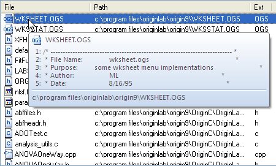
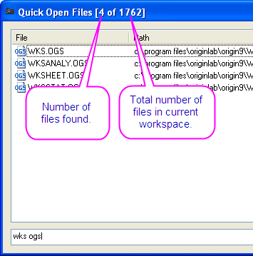

Right-click on the file list to display a shortcut menu with useful commands:
Code Builder provides a tool called Quick Open Files dialog to quickly find and open one or several wanted files by specifying certain conditions. To open this dialog, you can click Tools: Quick Open Files on the menu bar or press SHIFT + ALT + O from keyboard.
The Quick Open Files dialog box lists all files in current workspace, including the source files which are saved in default paths of Workspace. To open one or multiple files in the Text Editor, click on the file (hold CTRL or SHIFT for multiple selection) in the list and click OK or press ENTER. You can also double-click on the file name in the list to open a single file.
The Quick Open Files dialog allows you to sort the files by name, path, extension, modified date, and size. Upon clicking on the File tab, a triangle will display on the right of tab File, the files in the Quick Open Files dialog will be listed in ascending alphabetical order. Click again, the triangle will point downwards, indicating the files will be listed in descending alphabetical order. It is similar to the tab Path, Extension, Modified, and Size.
|
Right-click on the file list to display a shortcut menu with useful commands: |
The Quick Open Files dialog provides a Search Window tool to locate files with specified conditions. You can type search strings in the search window to set single or multiple conditions, the files that satisfy those specified criteria will be listed in the dialog box. You can also use the symbols listed in the following table to specify special conditions. The symbols can be used alone or in combination.
| Symbol | Usage |
|---|---|
| - (hyphen) | Search the file name excludes the string, e.g. "anova -1way" will find the files with "anova" and without "1way" in their names. |
| | (vertical bar) | Type | in front of the string will search the file name begins with the string, and that put it behind the string will find the file name ends with the string, e.g. "|anova h|" will find the files whose names begin with "anova" and end with "h". |
| \ (backslash) | Search the files whose paths contain the string, e.g. "\originc" will find the files whose paths include "originc". |
There are two tips about file information in the Quick Open Files dialog.

